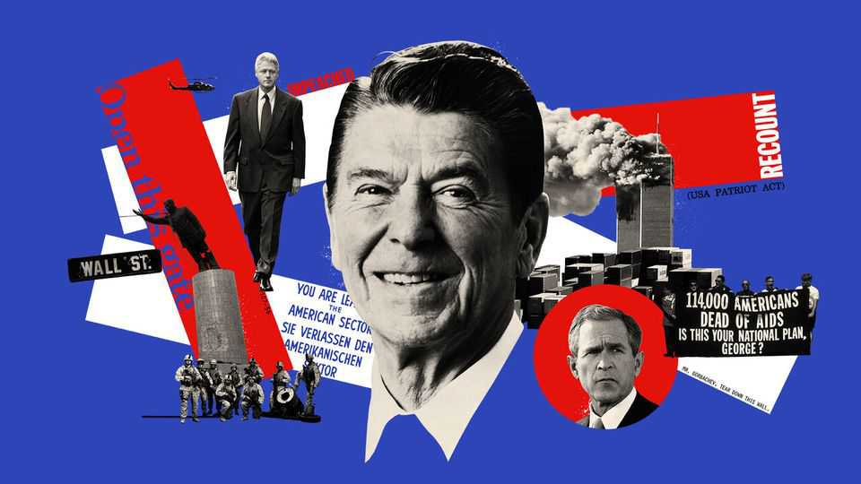

From morning in America to endless conflict
June 11th 2026

1980sAmerica’s Thatcher
A mood of national decline hung over America as it entered the 1980s. Ronald Reagan, an affable former actor and governor of California, seized the moment with a campaign for the presidency lamenting the country’s stagnation and promising renewal with a slogan: “Let’s make America great again.” [Stares into camera.] He won in a landslide over the incumbent Jimmy Carter.
At the heart of Reagan’s agenda was a call to pull back the state and give markets a freer hand—ideas which we like to think he cribbed from Margaret Thatcher, then the prime minister of Britain (and from The Economist, if we’re being honest). Like Thatcher, he reshaped politics in his country. One of his punchlines—“The nine scariest words in the English language are, ‘I’m from the government, and I’m here to help’”—put supporters of the welfare state on the back foot. It still defines American conservatism to this day.
And he gave America “Reaganomics”, or “trickle-down economics”—the idea that lowering taxes on the rich and on corporations spurs investment and job creation. This remains Republican orthodoxy despite mixed results under Reagan (and more recently). Inequality widened, as did the budget deficit. But economic growth rebounded. As Reagan would crow during his successful re-election campaign in 1984, it was “morning again in America”.
1987-89“Mr Gorbachev, tear down this wall”
Reagan was also a born-again Christian who put God at the centre of his staunch opposition to the godless faith of communism. He famously described the Soviet Union as an “evil empire” (in a speech to, less famously, evangelical Christians). But he did not just rely on God being on America’s side. He significantly boosted defence spending, investing (secretly) in costly, experimental new stealth fighters and bombers—while pouring billions into an unproven missile-defence system nicknamed, appropriately enough for combatting an empire, “Star Wars”. He also escalated America’s nuclear arms race with the Soviets.
Reagan was pursuing “peace through strength”. And, much to the surprise of critics, he pursued peace at the negotiating table, too, forging major nuclear-arms-reduction treaties with Mikhail Gorbachev. The president’s policies hastened the collapse of the Soviet Union. But the former actor was arguably as influential for nailing his line deliveries. In 1987 Reagan stood at the Brandenburg Gate by the Berlin Wall and declared, “Mr Gorbachev, tear down this wall.” Two years later, the wall fell. Coincidence? We think not.
Culture, conflict and a frightening new disease
In 1981 doctors in California and New York began reporting unusual infections among young gay men. Fear and misinformation spread rapidly around the mysterious illness, which many Americans saw—and stigmatised—as a “gay disease”. As the AIDS crisis took hold, Reagan kept silent. He did not publicly mention the epidemic until 1985, after his actor friend Rock Hudson was dying from the illness. The federal government eventually increased funding for research into the disease and potential treatments (led by a young Anthony Fauci, who will also make an appearance in the next chapter).
But AIDS would become much more than a scientific mystery and medical tragedy. It also exposed and widened cultural cracks that were forming within American society. Religious conservatives, by now a major political force, framed AIDS as a consequence of immoral behaviour and resisted pragmatic responses such as condom distribution and explicit sex education. Conflicts over sexuality, race, religion, education and artistic freedom were intensifying, and moving to the centre of political life. They became known as the “culture wars”: a seemingly permanent argument over what it meant to be American.
This is your prison system on drugs
Though it was Richard Nixon who first declared a “war on drugs”, Reagan dramatically escalated it. Violent crime had been rising for decades and by the 1980s crack cocaine had become a scourge, contributing to a pervasive sense of fear and urban decay. Reagan’s administration—with bipartisan support—treated drug use as a crime rather than an addiction, expanding policing and backing legislation that imposed mandatory minimum sentences for drug offences. The first lady, Nancy Reagan, urged children to “just say no”.
Black and white Americans used drugs at broadly similar rates, but enforcement patterns differed sharply by race. Penalties for crack cocaine, which was more common in poor urban communities, were far harsher than those for powder cocaine, more associated with affluent white users. Black Americans were disproportionately arrested and incarcerated. One of the most enduring consequences of the war on drugs was a vast expansion of the prison population. By the end of the 20th century America incarcerated a larger share of its population than any other democracy, a distinction it retains today. Oh, and global cocaine consumption? That is at record highs.
When greed became good
In the 1980s finance began to displace industry as the dominant sector of the American economy. Junk bonds and leveraged buyouts transformed corporate America. “Greed…is good”, declared Gordon Gekko in the 1987 film “Wall Street”, capturing the ethos of the age.
The financialisation of the economy coincided with something else: de-industrialisation, as manufacturers outsourced to foreign countries with cheap labour. This was enabled by the liberalisation of global trade under Reagan’s successor, George H.W. Bush, and especially Bill Clinton, who persuaded Congress to ratify the North American Free Trade Agreement and the creation of the World Trade Organisation.
The new economy generated enormous wealth, reduced consumer prices and reinforced America’s unipolar dominance of what Bush had called a “new world order”. But industrial towns became hollowed out, and globalisation would be blamed for lost jobs and livelihoods. Millions of middle-class Americans felt the rich were getting richer while they languished. It seemed that a backlash was coming.
1990sThe politics of personal destruction
Before Bill Clinton became the free-trade president, the moderate Democrat marketed himself as the candidate of the middle class taking on the out-of-touch country-club elites represented by Bush. He promised a middle-class tax cut and universal health care, then failed to deliver on either (until a tax cut late in his second term). Instead he balanced the budget and backed welfare restrictions, introducing fiscal discipline that had long been missing from American politics. Running for re-election in 1996 he sounded a lot like Reagan, declaring that “the era of big government is over.”
Part of the explanation for Mr Clinton’s rightward lurch lay in Newt Gingrich and the Republican takeover of Congress in 1994. Stunned by the historic electoral rebuke of his first two years in office (Republicans had not won the House since 1952), Clinton “triangulated” his politics between left and right and handily won re-election in 1996. Like Tony Blair in Britain he became an archetype of a new “third way” politician: pragmatic, centrist and adapted to the age of globalisation.
Yet Mr Gingrich attacked him relentlessly, ushering in a more polarised era of politics. He weaponised government shutdowns and mastered the outrage-driven politics of the emerging cable-news age. Mr Clinton supplied his opponents with ample ammunition. After the president lied under oath about an affair with Monica Lewinsky, a young White House intern, Republicans in Congress impeached him. Mr Clinton survived both the shutdown battles and his Senate trial. But as America entered the 21st century, its politics looked more like Mr Gingrich’s: harsher, more partisan and less willing to compromise.
Garages rock
Innovations in the 1970s and 1980s set the stage for a boom in the internet and tech stocks in the 1990s. As pioneers such as Fairchild Semiconductor, Intel and Hewlett-Packard clustered in Silicon Valley, they were joined by computing enthusiasts. Two of these, Steve Jobs and Steve Wozniak, built a user-friendly personal computer in a garage in Los Altos. The Apple II and then the Macintosh helped turn the machines from something only big companies and hobbyists used into everyday consumer products.
More quietly in the 1980s, the Pentagon’s network of research computers, ARPANET, had become the backbone of a global computer network, though one not yet accessible to the general public. The internet as we know it would take off in the early 1990s with the creation of the “World Wide Web” by Sir Tim Berners-Lee, a Briton (you’re welcome, American economy). Americans were first to realise the massive business potential. Jeff Bezos founded an internet bookstore from his garage in Bellevue, Washington. Two Stanford doctoral students, Sergey Brin and Larry Page, wanted to make information easier to find with their experimental search engine, Google (whose first real headquarters in Menlo Park was, naturally, a garage). In Pasadena, Greg McLemore and Eva Woodsmall started Pets.com, which would go on to become the biggest company on the planet—in another timeline where dogs and cats rule the universe.
Full of hot air
Al Gore may not have invented the internet (nor, despite the rumours, claimed to), but Mr Clinton’s vice-president did much to popularise concern about climate change, which had begun to take shape decades earlier. Rachel Carson’s 1962 book, “Silent Spring”, helped launch a largely bipartisan environmental movement. In 1970 a Republican president, Richard Nixon, pushed through a landmark Clean Air Act to limit pollution and created the Environmental Protection Agency. Around the same time scientists were, with the help of early computer models, warning with greater certainty that greenhouse gases would warm the planet.
Climate change entered the public consciousness in 1988 when James Hansen, a NASA climatologist, told a Senate committee that global warming was already under way. A decade later countries adopted the Kyoto Protocol, which imposed legally binding limits on greenhouse-gas emissions. America never ratified it, however, as climate change became a fiercely partisan issue, with Republicans increasingly siding with fossil-fuel companies who raised doubts about the science. Mr Gore’s Oscar-winning documentary, “An Inconvenient Truth”, helped raise general awareness. So did rising temperatures, melting glaciers and increasingly destructive weather events. But Republicans remained obstinate. One of them would even take to calling climate change a “hoax”.
2000The butterfly effect
Many will remember a close presidential election 16 years later that irrevocably altered the course of history, but an even closer one in 2000 also changed the world. Mr Gore, cerebral but charisma-challenged, ran against George W. Bush, the not-so-cerebral but genial Republican governor of Texas. They fought over the centre ground, with Mr Gore offering four more years of Clintonian policies (minus the Clintonian sex scandals) and Mr Bush championing “compassionate conservatism”.
When election night ended, the race was too close to call in Florida, whose electoral votes would decide the presidency. A day later Mr Bush was declared the winner there, but a recount was required by state law. The ensuing month featured much discussion of how to count “hanging chads” and about ballots that had been laid out in a confusing “butterfly” format. At one point a group of young Republicans in suits disrupted a recount by causing such a ruckus that it would become known as the “Brooks Brothers riot”. In the end the Supreme Court decided in Bush v Gore to halt the recount, awarding the presidency to Mr Bush. The court’s vote was bitterly divided, 5-4—and fiercely partisan, critics would say, a sign that in the 21st century political polarisation would not be contained to the halls of Congress and the White House.
2001The day the towers fell
Mr Bush was reading to a classroom of children when the second of two hijacked planes struck the World Trade Centre buildings in New York on September 11th 2001. The attacks were carried out by 19 hijackers from al-Qaeda, an Islamist terrorist group based in Afghanistan and led by Osama bin Laden. The trauma unfolded live on television as the twin towers collapsed. Another plane struck the Pentagon and a fourth crashed in Pennsylvania after passengers fought back. In all, nearly 3,000 people were killed. America’s post-cold-war sense of invulnerability was shattered. Its relationship with the world and its people would be transformed.
Mr Bush declared a global “war on terror”, beginning with an invasion of Afghanistan to overthrow the Taliban regime that had sheltered al-Qaeda. Congress passed the Patriot Act, greatly expanding surveillance powers, and created a new Department of Homeland Security. In doing so America was redrawing the line between a person’s civil liberties and the government’s interest in protecting the country from threats to national security. The renditions of suspects to third countries where they were subject to “enhanced interrogation techniques”, the detentions of suspects without trial at Guantanamo Bay and the use of secret wiretaps on Americans became defining controversies of the post-9/11 era. Mr Bush also embraced a doctrine of pre-emptive action against perceived threats, a principle that would soon shape American foreign policy beyond Afghanistan.
2001-03Unknown unknowns, aka the case for war
Mr Bush entered the White House surrounded by hawkish advisers, many of whom felt it was their duty to finish the war in Iraq that his father started. In 1991 American troops (backed by a UN coalition) quickly and easily drove Saddam Hussein’s army out of Kuwait. But they left the Iraqi dictator in power. Within days of the attacks of September 11th, Vice-President Dick Cheney and Donald Rumsfeld, the secretary of defence, began making the case for invading Iraq.
The dangers posed by Iraq to America were not immediately obvious to many—it had no connection to al-Qaeda—but in early 2002 Rumsfeld notoriously warned about “unknown unknowns—the ones we don’t know we don’t know.” Mr Bush argued that Hussein possessed weapons of mass destruction (WMDs) and posed a grave threat. The supposed graveness of the threat mattered more than the specific evidence: “We don’t want the smoking gun to be a mushroom cloud,” Condoleezza Rice, the national security adviser, said in September 2002. America invaded Iraq six months later.
2003-11Mission not accomplished
The Iraq war turned out to be a disaster for the region, for the world and for America. Hussein was swiftly toppled, and just six weeks after the invasion Mr Bush stood beneath a banner reading “Mission Accomplished”. But American soldiers would remain in Iraq for another eight years. Mr Bush’s hawks had not prepared for the task of installing a new Iraqi government, and struggled to do so while fighting a growing insurgency. No WMDs were ever found, eroding Americans’ already shaky trust in government (and the media). The army’s torture and degradation of detainees at Abu Ghraib prison also eroded America’s moral standing in the world. Hundreds of thousands of Iraqi civilians would die in the years of the insurgency, and a deadly new jihadist threat emerged from the chaos America had wrought in the form of the Islamic State terrorist group. At least after that America would finally be done waging costly wars in the Middle East.■